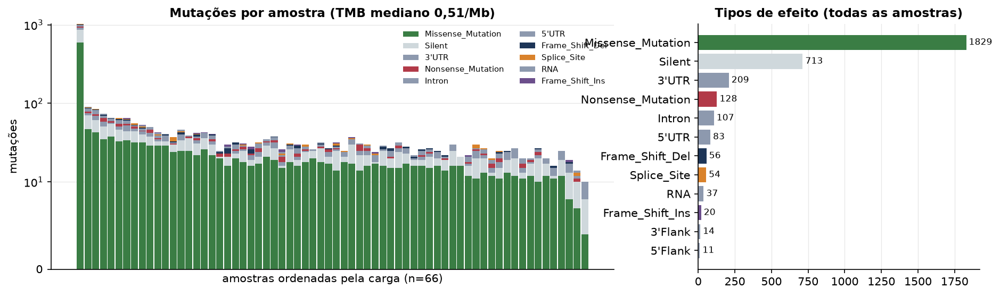
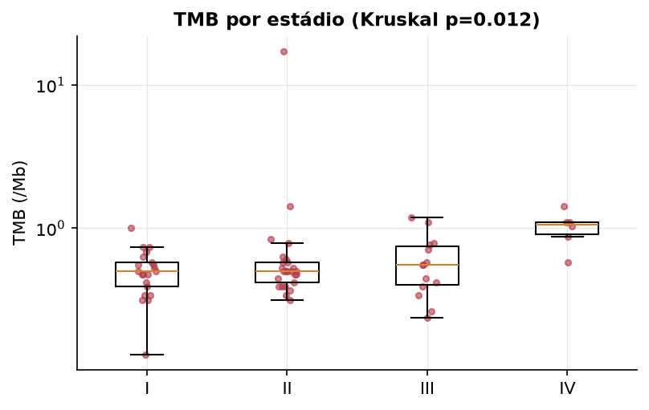
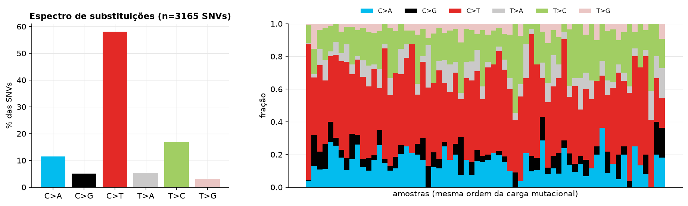
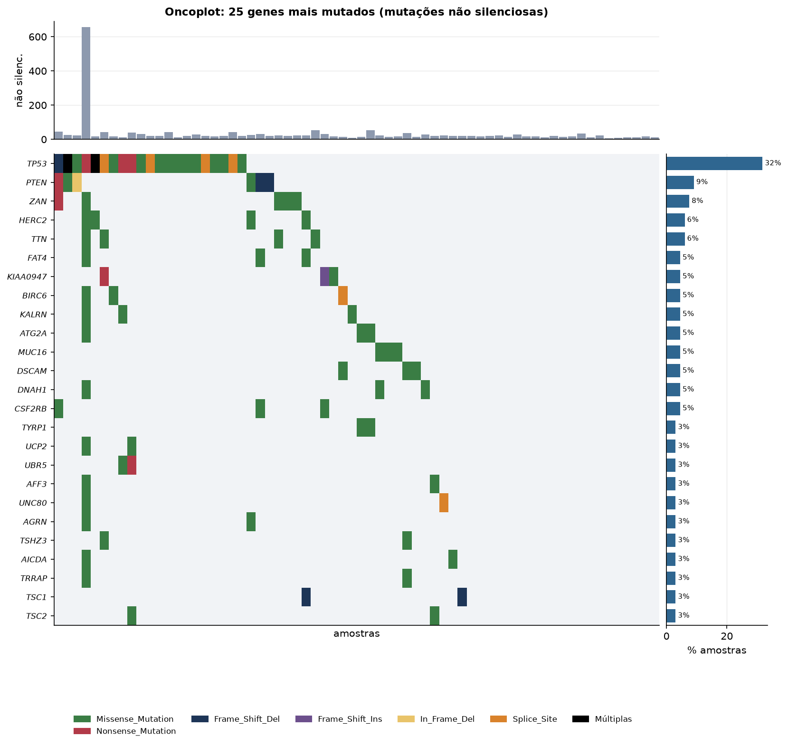
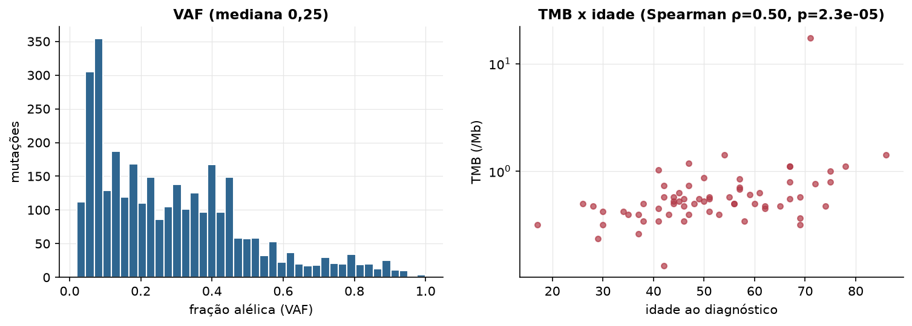

KICH · Mutações somáticas
MC3 v0.2.8 (PanCanAtlas), exoma, chamadas consenso · gerado em 21/10/2026 22:15
66amostras sequenciadas
3.280mutações
0,51TMB mediano (/Mb)
1hipermutados (≥10/Mb)
Fonte: MC3 v0.2.8 (PanCanAtlas)
O MC3 inclui só amostras tumorais com exoma sequenciado e só mutações que passaram nos filtros de consenso. Amostras sem nenhuma mutação não aparecem no arquivo e entram aqui com carga zero quando estão na lista de amostras.
Principais resultados
- 3.280 mutações em 66 tumores, das quais 2.106 alteram proteína. A carga mutacional mediana é 0,51 mutações não silenciosas por Mb (exoma de ~38 Mb).
- 1 amostra(s) hipermutada(s) (≥ 10/Mb): TCGA-KN-8428-01.
- Genes mais mutados: TP53 (32%), PTEN (9%), ZAN (8%), HERC2 (6%), TTN (6%), FAT4 (5%), KIAA0947 (5%), BIRC6 (5%).
- A substituição mais frequente é C>T (58,1% das SNVs). Predomínio de C>T costuma refletir desaminação de citosinas metiladas (assinatura de envelhecimento); C>A sugere tabaco ou dano oxidativo; T>C pode indicar exposições específicas.
- Correlação entre idade e TMB: ρ=0.50 (p=2.3e-05).
Carga mutacional


Espectro de substituições

Genes mais mutados

Genes com mais tumores mutados
| gene | amostras_mutadas | % das amostras |
|---|---|---|
| TP53 | 21 | 31.8 |
| PTEN | 6 | 9.1 |
| ZAN | 5 | 7.6 |
| HERC2 | 4 | 6.1 |
| TTN | 4 | 6.1 |
| FAT4 | 3 | 4.5 |
| KIAA0947 | 3 | 4.5 |
| BIRC6 | 3 | 4.5 |
| KALRN | 3 | 4.5 |
| ATG2A | 3 | 4.5 |
| MUC16 | 3 | 4.5 |
| DSCAM | 3 | 4.5 |
| DNAH1 | 3 | 4.5 |
| CSF2RB | 3 | 4.5 |
| TYRP1 | 2 | 3 |
| UCP2 | 2 | 3 |
| UBR5 | 2 | 3 |
| AFF3 | 2 | 3 |
| UNC80 | 2 | 3 |
| AGRN | 2 | 3 |
| TSHZ3 | 2 | 3 |
| AICDA | 2 | 3 |
| TRRAP | 2 | 3 |
| TSC1 | 2 | 3 |
| TSC2 | 2 | 3 |
| TP63 | 2 | 3 |
| TMEM151B | 2 | 3 |
| TMEM2 | 2 | 3 |
| TMEM108 | 2 | 3 |
| TCEB3B | 2 | 3 |
Fração alélica e idade
